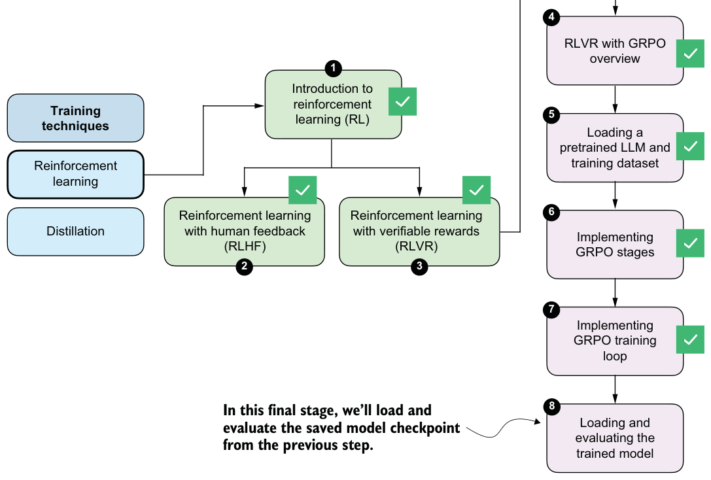

The loss values should not be over-interpreted. Steps with reward_avg=0.000 produce a near-zero loss because all rollouts receive the same reward, resulting in vanishing group-relative advantages and little to no gradient signal. Larger loss magnitudes, such as at step 3 (see row 4 in the preceding output), simply reflect bigger relative differences between rollouts and are typical for GRPO-style objectives, especially at the beginning of training.
Ideally, we want to see two main trends over time:
1 The average reward should increase when averaged over many steps, as the model learns to produce more accurate responses.
2 The reasoning accuracy should improve (we’ll evaluate this in the next section). The online code for the book contains a slightly more sophisticated version of the script that also includes an option to evaluate the model periodically on subsets of the MATH-500 test dataset to see whether the model is improving on the target task: https://github.com/rasbt/reasoning-from-scratch/tree/main/ch06/02_rlvr_grpo_ scripts_intro.
Batched training
6.12Loading and evaluating saved model checkpoints
Now we’ll discuss how to load the saved checkpoints from the RLVR training run in the previous section (see figure 6.21). We’ll also evaluate the model on the MATH-500 dataset.
The saved checkpoints can be loaded using the PyTorch state dict approach described in chapter 2, where model_path points to the corresponding .pth checkpoint file:
model.load_state_dict(torch.load("qwen3-0.6B-rlvr-grpo-step00050.pth"))Downloading RLVR checkpoints
from reasoning_from_scratch.qwen3 import download_qwen3_grpo_checkpoints
download_qwen3_grpo_checkpoints(grpo_type="no_kl", step="00050")num_rollouts=4 was changed to num_rollouts=8.
These checkpoints are fully compatible with the model evaluation utilities introduced in chapter 3, which allow us to evaluate RL-trained models using the same MATH-500 verification pipeline.
For convenience, you can reuse the evaluation script provided in the chapter 3 bonus materials (https://github.com/rasbt/reasoning-from-scratch/blob/main/ch03/02_math500-verifier-scripts/evaluate_math500.py) to run evaluations on the
MATH-500 dataset by specifying the desired checkpoint path. For example, to evaluate the qwen3-0.6B-rlvr-grpo-step00050.pth checkpoint file, you can run the aforementioned script as follows:
uv run evaluate_math500.py \
--dataset_size 500 \
--which_model base \
--checkpoint_path "qwen3-0.6B-rlvr-grpo-step00050.pth"(If you are not a uv user, replace uv run with python.)
Table 6.1 compares the original base and reasoning models (rows 1 and 2) to the base model we trained via GRPO in this chapter (rows 3–5).
| Method | Step | Max tokens | Num rollouts | Accuracy | Average tokens | |
|---|---|---|---|---|---|---|
| 1 | Base model (chapter 3) | - | - | - | 15.2% | 78.85 |
| 2 | Reasoning model (chapter 3) | - | - | - | 48.2% | 1369.79 |
| 3 | GRPO (this chapter) | 50 | 256 | 4 | 43.2% | 560.22 |
| 4 | GRPO (this chapter) | 50 | 512 | 4 | 45.6% | 579.81 |
| 5 | GRPO (this chapter) | 50 | 512 | 8 | 47.4% | 586.11 |
The accuracy column in table 6.1 refers to the accuracy on the full 500-sample MATH-500 dataset we used in chapter 3.
The max tokens column identifies the number of tokens allowed per rollout during training. If the number is 512, this encourages the LLM to provide the final boxed answer within that 512-token limit; otherwise, it will not receive a reward during training. The evaluation code was run with a maximum token limit of 2,048, allowing the LLM to generate longer responses during evaluation.
The average tokens column shows the average response length in the evaluation on the MATH-500 dataset. As you can see, compared to the reference reasoning model (row 2), our GRPO models generate shorter responses on average, as expected because of the token-length restriction during training.
Note that the DeepSeek-R1 team observed that responses grow longer over the course of training as the model begins to write intermediate (chain of thought) explanations. To maximize accuracy, it makes sense not to restrict token length too aggressively during training. Longer token lengths, especially when coupled with multiple rollouts, require more computational resources, which is why we capped them at a lower value in this chapter.
As shown in table 6.1, training the reasoning model via GRPO results in 47.4% accuracy (row 5), which is close to the accuracy of the official Qwen3 0.6B reasoning model on MATH-500. The model’s accuracy could be further improved by increasing the response length, sampling more rollouts per prompt, and training for additional steps. The next chapter will introduce practical tips and techniques for monitoring and improving GRPO training outcomes.
We trained the model for only 50 steps, which already appears sufficient to unlock reasoning behavior in the base model. In my experiments, training for longer does not necessarily improve performance and can even reduce accuracy, since the original
GRPO formulation can be unstable over longer runs.
It’s also worth keeping in mind that this chapter implemented a simplified GRPO variant without the KL regularization term. In the next chapter, we’ll return to the full
GRPO objective, add the KL term back in, and discuss common improvements for making training more stable over longer runs.
If you’re interested, you can find and download additional checkpoints ranging from
50 to 9,000 at https://huggingface.co/rasbt/qwen3-from-scratch-grpo-checkpoints/tree/main/grpo_original_no_kl.